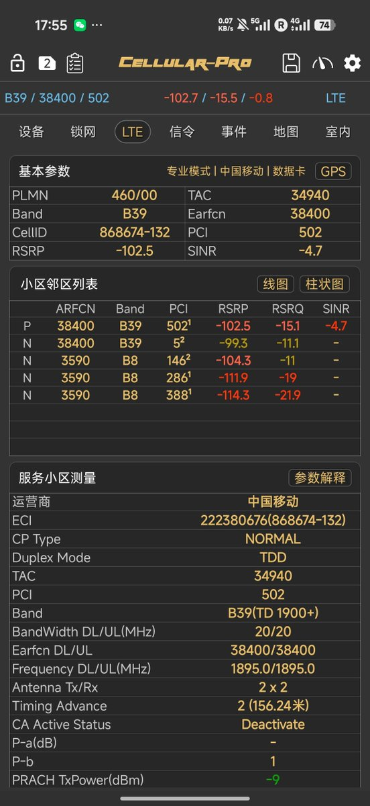

奶昔🥤
@realNyarime
有推友私信问我，上台了CMHK或CTM在内地用5G却没有SA漫游，其实这是厂商屏蔽了。苹果在iOS26.0.1后修复了17系列双卡下SA漫游的bug，而国产机是直接做了屏蔽。
最典型的就是小米17系列和红米K90ProMax（骁龙8E5机型），趁着米米解锁日大家都在抢，能解BL还不掉TEE的神机。至于N79是硬件阉割，只有小米17PM有，其余都不支持，体验上比小米15Pro还耍猴！
如果要使用SA漫游，除了特定版本的iPhone 17系列，还有港版三星。除此之外还有烽火CPE、中兴随身WiFi等设备支持。
